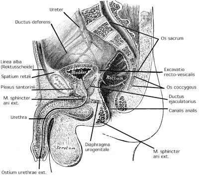
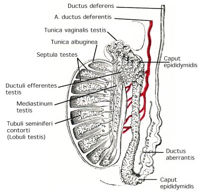

Bladder exstrophy with epispadias in a girl. With kind permission of Prof. Dr. R. Harzmann, Augsburg
|  |
fig. Anatomy of the male pelvis, median sagittal section. Figure modified from Gray's Anatomy, Lea and Febinger 1918, Philadelphia, USA. |
|
Bladder exstrophy with epispadias in a girl. With kind permission of Prof. Dr. R. Harzmann, Augsburg |
 |
fig. balanitis circinata: erosive plaques on the glans due to Reiter syndrome. Figure from Dr. Wiesner, Dr. Kaufman, Public Health Image Library, Center for Disease Control and Prevention, USA, https://phil.cdc.gov/. |
 |
fig. Gangrenous balanitis: Fournier gangrene of the glans penis. Figure from S. Lindsley, Public Health Image Library, Center for Disease Control and Prevention, USA, https://phil.cdc.gov/. |
 |
fig. erythroplasia Queyrat: squamous cell carcinoma in situ (Bowen disease) of the glans. Figure from S. Lindsley, Public Health Image Library, Center for Disease Control and Prevention, USA, https://phil.cdc.gov/. |
 |
| Right-sided bartholinitis. Figure from S. Lindsley. Public Health Image Library, Center for Disease Control and Prevention, USA, https://phil.cdc.gov/. |
 |
fig. chancroid with genital ulcer and suppurative adenopathy: Figure from Dr. Pirozzi, Public Health Image Library, Center for Disease Control and Prevention, USA, https://phil.cdc.gov/. |
 |
Perineal incision for urethral surgery: the bulbospongiosus muscle is pulled aside by the hooks of the Scott retractor. |
 |
fig. Granuloma inguinale (Donovanosis): Figure from Dr. Tabua, Papua, New Guinea. Public Health Image Library, Center for Disease Control and Prevention, USA, https://phil.cdc.gov/. |
 |
fig. urethral discharge due to gonorrhea: with purulent abscess lesion on the glans. Figure from the image collection of the Public Health Image Library, Center for Disease Control and Prevention, USA, https://phil.cdc.gov/. |
 |
| fig. genital sores in herpes genitalis: grouped vesicles on an erythematous base at the sulcus of the penis. Figure from Dr. N.J. Flumara and Dr. Gavin Hart, Public Health Image Library, Center for Disease Control and Prevention, USA, https://phil.cdc.gov/. |
 |
Condyloma acuminata of the penis. |
 |
Asymptomatic coronal hypospadia of an adult |
 |
Fournier gangrene: necrotic infection of the scrotal skin with dark hemorrhagic areas (upper left). Despite complete excision of the necrotic tissue, the testicles could be preserved. (upper right). Antiseptic dressing of the wound (lower left and right). |
 |
Figure 2.3: Congenital Meatusenge with persisting urethral membrane. The failed regression of the distal urethral membrane causes symptoms of subvesical obstruction or recurrent urinary tract infections. Image from William R. Smart, San Rafael, California, Public Health Image Library, Center for Disease Control and Prevention, USA, https://phil.cdc.gov/. |

|
fig. balanitis circinata due to Reiter syndrome. Figure from Dr. Wiesner, Dr. Kaufman, Public Health Image Library, Center for Disease Control and Prevention, USA, https://phil.cdc.gov/. |
 |
Uncircumcised penis with visible frenulum. Public domain-figure from http://commons.wikimedia.org |
 |
Erect penis with phimosis, the retraction of the prepuce is not possible. Public domain figure from http://commons.wikimedia.org |
Synonym: Spanish collar.
 |
Paraphimosis: before (left) and after (right) reposition of the foreskin. With kind permission of Prof. Dr. R. Harzmann, Augsburg. |
 |
Dorsal incision: treatment of paraphimosis. |
 |
| Fig. Anatomy of the male urethra: Figure modified from Gray's Anatomy, Lea and Febinger 1918, Philadelphia, USA. |
 |

Fig. External male genitals and contents of the spermatic cord: superficial inguinal ring (1), cremasteric muscle (2) and (4) spermatic cord (3), septum scroti (5), tunica dartos (6), vas deferens ( 7), testicular artery (8), branches of the ilio-inguinal nerve (9), deferential artery (10), external spermatic fascia with cremaster muscle and internal spermatic fascia (11), pampiniform plexus (12), epididymis (13), lamina parietalis of the tunica vaginalis testis (14). Figure from Gray's Anatomy, Lea and Febinger 1918, Philadelphia, USA.
[fig. cross section of the testis and epididymis].|  | Fig. cross section of the testis and epididymis
Fig modified from Gray's Anatomy, Lea and Febinger 1918, Philadelphia, USA. |
 |
fig. Anatomy of the scrotum: Figure modified from Gray's Anatomy, Lea and Febinger 1918, Philadelphia, USA. |
 |
| fig. Chancre (genital ulcer) in primary syphilis: firm painless ulceration, which is sharply demarcated. Figure from Dr. Gavin Hart and Dr. N. J. Fiumara. Public Health Image Library, Center for Disease Control and Prevention, USA, https://phil.cdc.gov/. |
 |
| fig. Multiple condylomata lata in secondary syphilis; painless warts and moist erosions in the genital and perianal region. Figure from Brian Hill, New Zealand. Public Health Image Library, Center for Disease Control and Prevention, USA, https://phil.cdc.gov/. |
 |
fig. hemorrhagic necrosis of the testis due to testicular torsion |
 |
| fig. surgical exploration of the scrotum: the testis is fixed with the left hand in the scrotum and a transverse incision of the skin and layers of the scrotum is done. |
 |
fig. hemorrhagic necrosis of the testis due to testicular torsion. |
 |
| fig. urethral caruncle: circular prolapse of the mucous membrane of the female urethra. With kind permission of Prof. Dr. R. Harzmann, Augsburg. |
 |
Vaginal mass due to a diverticula of the female urethra. With kind permission of Prof. Dr. R. Harzmann, Augsburg. |